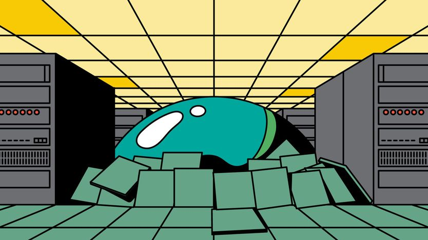

AI 泡沫或国债，总有一个会砸崩市场，但大概不会同时
Either AI or public debt could crash markets. But probably not both
AI 股若崩，债券收益率会跟着下来

- 市场眼下被两件事吓着：一边怕国债收益率太高把政府债务压垮，一边怕 AI 赚不到钱、撑不住数据中心投资。本刊的判断是这两件事不会同时爆，真要挑一个更该怕的，是主权债务。
- 逻辑不复杂：AI 泡沫破了，钱会逃向美债、央行会降息，债券反而受益；反过来国债出事才是无处可躲——连美元作为避险货币的地位都会动摇。
- AI 这一侧的裂缝已经出现：靠出租算力的小型云厂商 CoreWeave，五年期债券收益率从 7 月的 10% 跳到 15%，股价一个月跌掉约三分之一，融资成本已到两位数。
- 但不必当成 2008 年重演：AI 融资的链条比当年次贷证券透明，银行资本更厚，英伟达手握巨额现金在托底。更合适的类比是 2000 年互联网泡沫，破了也只是温和衰退。
两个幽灵正在金融市场游荡。其一是对债券收益率飙升的恐惧：它会让富裕国家摇摇欲坠的公共财政难以为继，引爆一场难看的财政危机。其二是对人工智能收入的担忧：维持数据中心热潮所需的收入可能根本不会到来。正如本刊报道的那样，那将重创信贷市场，并连带引发股市大跌。
好消息是，只有伊卡博德·克莱恩（小说《睡谷传说》里那个瘦骨嶙峋、一惊一乍的乡村教师）才会以为这两种情景会同时发生。投资者真正要判断的，是哪一个故事更可怕。就目前而言，本刊更担心主权债务。
今年大部分时间，市场担心的是政府。从 2 月底到 10 月初，30 年期美国国债收益率整整上行了 1 个百分点。与伊朗的战争推高了通胀，迫使各国央行加息。强劲的经济增长和数据中心建设热潮引发了对资本的争夺，政府不得不与私营部门抢钱。在日本、英国，尤其是法国，投资者一直在担心政府偿还债务的能力。
但最近几周，AI 繁荣可能终结的前景更让市场害怕。CoreWeave 是一家「新云」（neocloud，指专门出租数据中心算力的独立厂商），它的五年期债券收益率已从 7 月的 10% 升到 15%，公司股价过去一个月跌了约三分之一。AI 模型提供商 Anthropic 收入增速放缓，让投资者担心 CoreWeave 及其同行所需的现金可能到不了账，至少不够快到能偿付债权人。融资相互交织，意味着痛感会迅速扩散：既沿着 AI 供应链传导，也会砸到持有大量数据中心债务的私募信贷和保险公司身上。

结果是，许多主权债券反而涨了。法国没得到什么喘息——骚乱正在加剧政治危机；英国也没有，即将公布的预算让投资者紧张。但十年期美债收益率下行了 0.2 个百分点。经济下行时，投资者通常会逃向美国国债避险。在其他地方，数据中心投资一旦放缓，AI 崩盘反而会缓解抢资本的紧张；央行还会降息托底增长，债务也就更好还了。
只有当出现类似 2007—09 年全球金融危机那样的大崩盘时，两种风险才会撞在一起。各国政府赤字本已够深，一场深度衰退会让税收锐减、福利支出激增，财政赤字将变得真正骇人。长期国债收益率可能在短期利率下降的同时上升——这是新兴市场偶尔会犯的财政病，症状很难看。金融危机期间没出现过，但今天债务和赤字的起点更高。
所幸，没有理由预期这么深的崩盘。没错，金融史表明有用的新技术往往带来一轮繁荣与崩溃，AI 背后的融资网络也确实变复杂了。但这个行业的相互关联，比 2007 年那堆名字像字母汤的房贷证券更容易看清。银行也更安全：它们通过给私募信贷机构放贷而暴露于 AI，但资产负债表更结实，监管也更到位。为行业相当一部分兜底的，是手握巨额现金的芯片厂商英伟达。最重要的是，AI 资产虽然在许多股指里占比不小，但在家庭财富中的比重远低于当年的房地产。
所以，今天 AI 的脆弱之处，最合适的类比仍是 1990 年代末的互联网泡沫。2000 年泡沫破裂时，股价崩塌只带来了温和衰退；债券收益率下行，底层生产率增长也稳住了。这种情景几乎解决不了政府的长期预算问题，却可能把危机推后。美国以外许多经济体对债券收益率的敞口大于对 AI 热潮的敞口；只要增长下滑幅度小于利率降幅，旧债的负担就会变轻。衰退会让美国赤字扩大，但世界对美债的需求也会上升，因为美元是全球储备货币。
相比之下，如果高利率引爆主权债务，后果会真正严重。一旦投资者对美债失去信心，美元作为避险资产的宝贵地位就会受威胁。正如法国正在体会的，被逼到墙角还要削赤字，容易引发政治动荡。政府可能宁愿用通胀把债务稀释掉，也不愿真去还。那会危及一切投资所依赖的稳定。一个大型发达经济体出现主权债抛售，投资者大概会宁愿自己担心的只是一场互联网式的 AI 泡沫破裂。